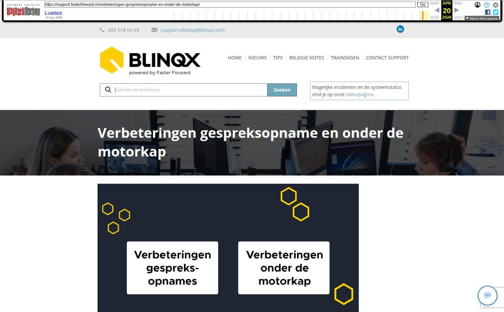

Verbeteringen gespreksopname en onder de motorkap

Tekstinhoud
Op dinsdag 24 februari zijn Elements en eBlinqx weer verbeterd en uitgebreid met nieuwe features. Deze release bevat onder andere verbeteringen onder de motorkap. Ook zijn er nieuwe features alleen voor eBlinqx, namelijk verbeteringen in gespreksopname.
eBlinqx Only
Verbeteringen gespreksopname
Verbeteringen taken aanmaken
Gespreksopname uploaden
Zichtbaar wie gespreksopname heeft toegevoegd
Elements en eBlinqx
Verbeteringen onder de motorkap
Overige verbeteringen
eBlinqx Only
Verbeteringen gespreksopname
Let op: alleen beschikbaar in eBlinqx
Verbeteringen taken aanmaken
Vanuit de gespreksopnames is het mogelijk om taken te generen. Dit scherm is visueel verbeterd. Daarnaast kan je nu per taak de start- en einddatum, tijd en verantwoordelijke aanpassen.
Gespreksopname uploaden
Het is nu mogelijk om in het dossier een gespreksopname te uploaden. Op deze manier kan je gesprekken toevoegen die je bijvoorbeeld met jouw telefoon hebt opgenomen. De toegestane bestandstypen zijn MP3, MP4, WAV, webm en ogg. Met deze geüploade gespreksopnames kan je dezelfde acties uitvoeren als gesprekopnames die vanuit eBlinqx zijn gestart. Mocht het niet het juiste bestandstype zijn of deze is te groot dan wordt er een melding getoond bij het uploaden.
Zichtbaar wie gespreksopname heeft toegevoegd
Bij de gesprekopnames staat nu de kolom 'Toegevoegd door'. Zo kan je zien wie de gespreksopname vanuit eBlinqx heeft gestart of wie de opname heeft geüpload.
Elements en eBlinqx
Verbeteringen onder de motorkap
De softwaretechnieken van Elements en eBlinqx zijn weer verder vernieuwd. We hebben hier verdere verbeteringen op doorgevoerd. Ondanks dat je hier niets van merkt, is deze vernieuwing erg belangrijk.
Hierdoor kunnen we namelijk nieuwe innovaties blijven implementeren, omdat we gebruikmaken van de nieuwste software. Bovendien blijft de veiligheid gewaarborgd. Dit geldt zowel voor Elements en eBlinqx als voor alle koppelingen en exports, zoals klantportalen, adviespakketten, Excel en verbindingen met geldverstrekkers en verzekeraars.
Overige verbeteringen
De geldverstrekkers Argenta, Allianz, Nationale Nederlanden en Vista werken met IA/IX berichten
Instagram en TikTok zijn toegevoegd als social media. Deze kan je toevoegen onder de persoon/organisatie bij Social
De dossierrol (eerste persoon of partner) wordt meegestuurd naar MyTP
Wanneer een ADN-branche het niet toestaat om objecten aan te maken dan wordt het object niet meer aangemaakt
Aan relatie organisaties zijn 'Gelieerde onderneming' en 'Ondernemer in privé' toegevoegd
Geplaatst op 20 februari 2026
Laatste 5 releasenotes
Gemakkelijk data en documenten vergelijken »
Verbeteringen boekhouding en facturatie »
Verbeteringen gespreksopname en onder de motorkap »
Verbeteringen onder de motorkap en gespreksopnames »
HDN release: afscheid van HDN certificaten »